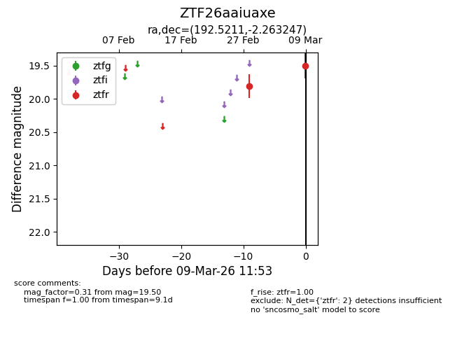
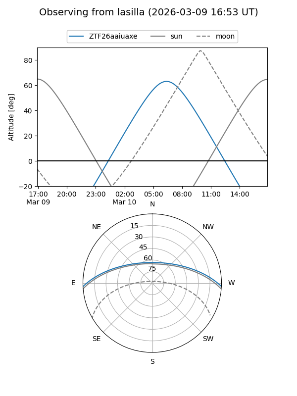
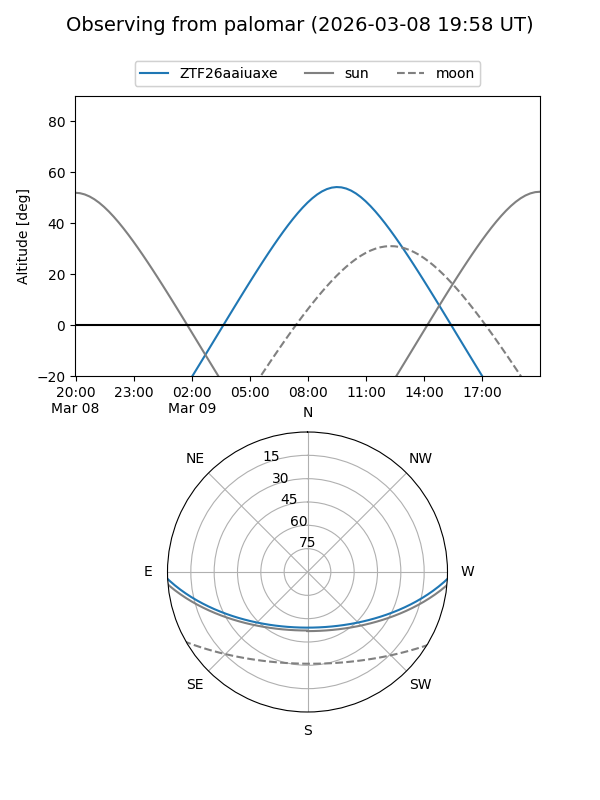
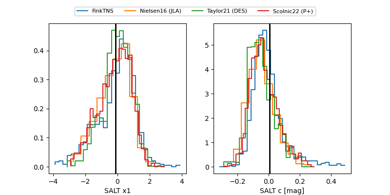

ZTF26aaiuaxe
Target ZTF26aaiuaxe at 2026-03-09 11:55
Aliases and brokers:
FINK: link
Lasair: link
ALeRCE: link
alt names
ZTF26aaiuaxe (ztf,fink_ztf)
Coordinates:
equatorial (ra, dec) = 192.5211,-2.26325
equatorial (HMS+DMS) = 12:50:05.07,-02:15:47.69
galactic (l, b) = (302.2431,+60.60669)
Flags:
Photometry:
last ztfr=19.50
2 ztfr detections
Lightcurve

Visibility


Additional plots
